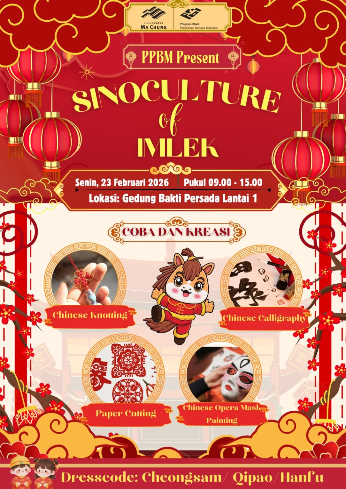
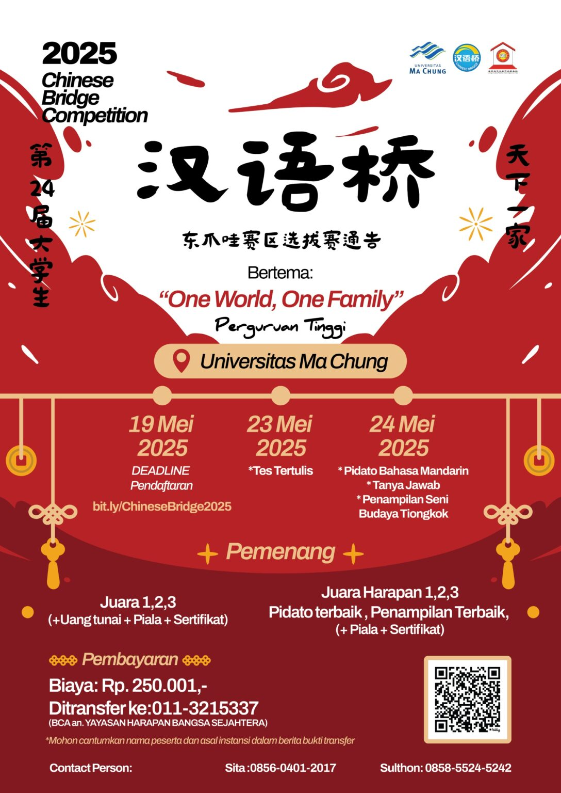
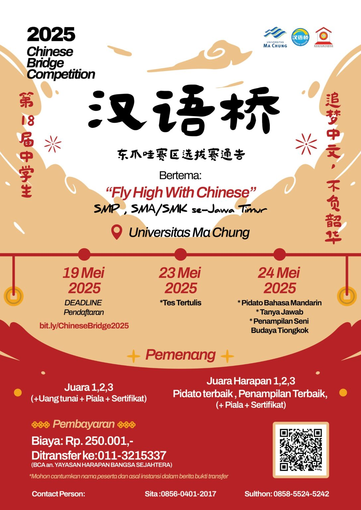
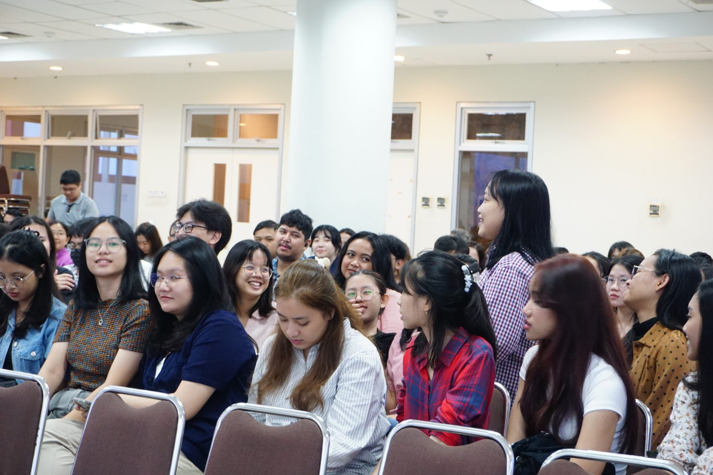

Mengembangkan Pendidikan dan Pengajaran Bahasa Mandarin yang selaras dengan tuntutan dunia kerja berbasis pada pendekatan konstruktivistik lintas budaya untuk menghasilkan lulusan yang berkualitas.
Menyelenggarkan Pendidikan dan pengajaran Bahasa Mandarin yang berpusat pada mahasiswa yang adaptif terhadap perkembangan dunia kerja
Menerapkan pembelajaran dan pengajaran yang menghubungkan antara budaya Indonesia dengan budaya Tiongkok
Melaksanakan penelitian dalam bidang pendidikan, budaya, dan penerjemahan Bahasa Mandarin demi kemajuan dan pengembangan ilmu.
Mengikutsertakan mahasiswa dalam pengabdian kepada masyarakat untuk menciptakan pengalaman empiris.
Menghasilkan pendidik Bahasa Mandarin pada institusi formal maupun non-formal yang berkualitas serta mampu mengikuti perkembangan teknologi pendidikan.
Menghasilkan wirausahawan dalam bidang bahasa Mandarin yang dapat menyesuaikan dengan kebutuhan masyarakat.
Menghasilkan penerjemah Bahasa Mandarin yang adaptif dalam berbagai bidang.
Menghasilkan peneliti pemula Bahasa Mandarin yang mendukung pengembangan ilmu kebahasaan dan budaya.
Menghasilkan tenaga profesional yang mampu menjalankan fungsinya di berbagai bidang pekerjaan dengan mengedepankan kemampuan komunikasi dan kecakapan berbahasa.
Menguasai bahasa Mandarin untuk percakapan resmi maupun sehari-hari baik lisan maupun tulisan.
Mampu menerjemahkan teks umum berbahasa Mandarin ke dalam bahasa Indonesia yang baik dan benar.
Menguasai teori dan keterampilan pengajaran bahasa Mandarin kepada orang asing.
Mampu mengkaji aspek-aspek budaya dalam masyarakat Tiongkok.
Menguasai keterampilan terkait budaya Tiongkok seperti kaligrafi, Chinese Knot, Paper Cutting dan lain sebagainya.
Bahasa Mandarin yang sangat baik.
Tidak hanya kemampuan bahasa,
soft skill nya juga sangat baik dan
karakternya dapat diandalkan.



